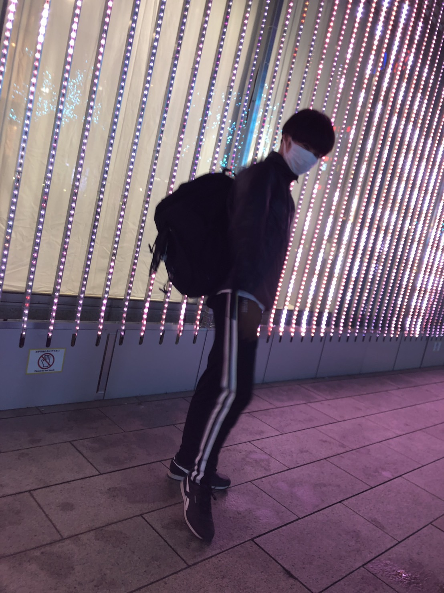
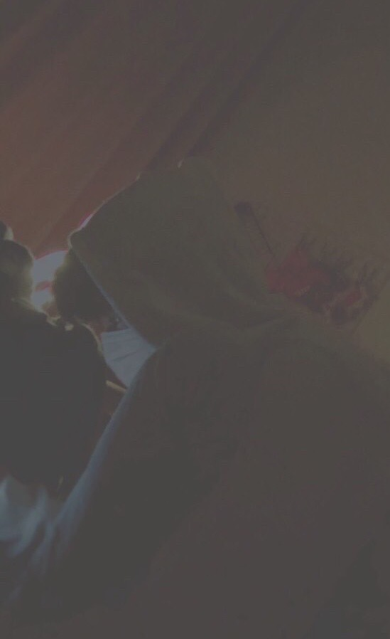
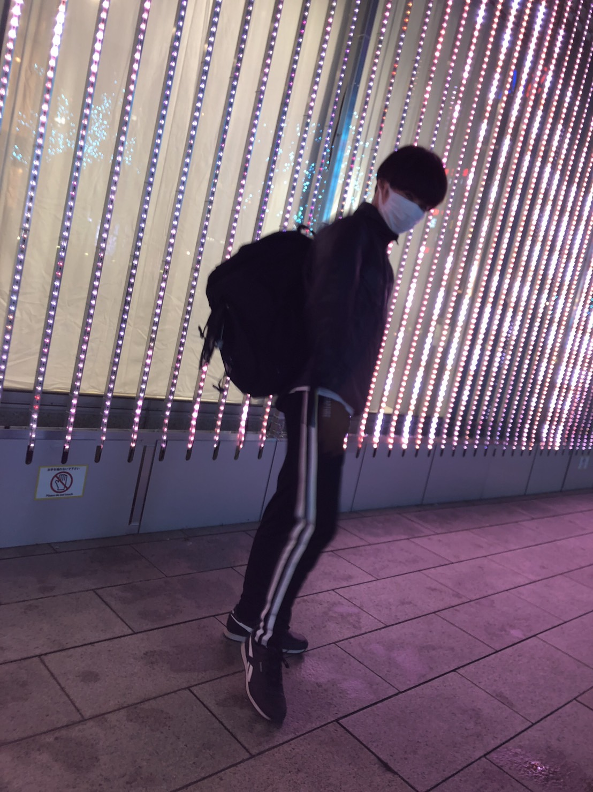
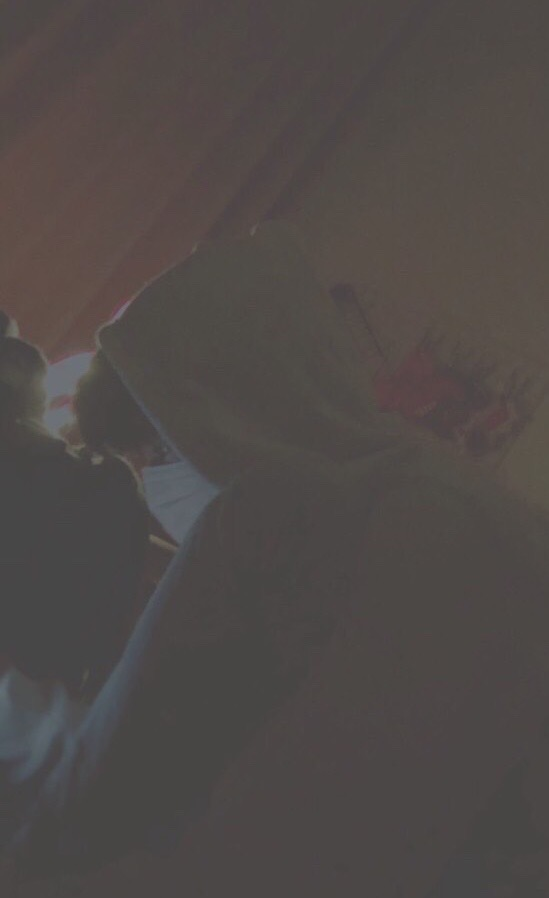

受験に落ちた彼は、地元の「札幌市立中央中学校」に進学した。
ショックのあまりか、彼は小学校の頃とは打って変わって、
物事を真面目に取り組むようになった。
中学１年生では学級議長を務め、２年では学年代表に就任した。
先生からの評価も、成績も、友達関係も何もかもがうまく行き、
順風満帆な学校生活を送っていた。
しかし、中学３年生の夏に事件は起こった。
そう「いじめ」だ。
彼はクラスメイトからいじめにあったのだ。
とはいえ、暴力などの身体的ないじめではなく、
陰口や、仲間外れなどの精神的なものだった。
小学校の頃はいじめる側だった彼は、
今、自分がいじめにあっている事が信じられず、
何度も世を去ることを考えた。
実行に移そうとホーマックに縄を買いに行った事もあった。
しかし、彼にはまだ心残りがあった。
それは、自分は人生でまだ何も成し遂げていないということだ。
負けず嫌いだった彼はそんな自分が許せなかった。
彼の目標は唯一つ、過去に失敗した「受験」へのリベンジだった。
彼は机に向かい、来る日も来る日もひたすら勉強を続けた。
厳しい親の反対を押し切り、名の知れている学習塾にも通い、
着実に学力を伸ばしていった。
気がつけば彼は、誰にも負けない程の秀才になっていた。
かつて敵だったクラスメイトすらも、全力で彼を応援した。
そんな彼が目指したのは「札幌南高校」、道内最難関の高校だ。
昔の彼だったら、そんなのは無謀だと笑われていたに決まっている。
だが、今の彼を笑う者は誰ひとりとしていなかった。
彼は死ぬ気で勉強をした、掌に血豆ができるほどペンを握った。
迎えた試験当日、彼は皆の期待を背に会場へ向かった。
結果は「不合格」だった。